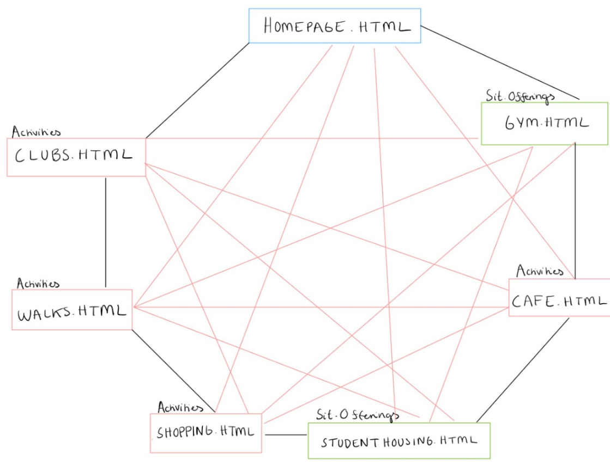
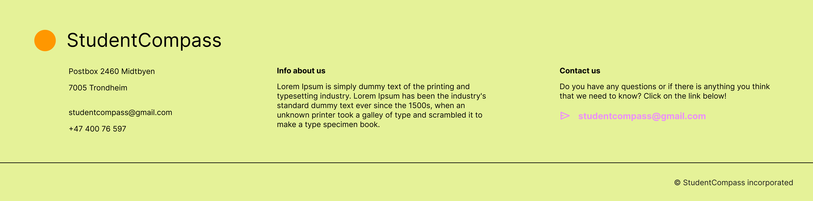

4. Navigation Structure
The site structure and navigation of The Student Compass have been structured to provide users with an intuitive experience. Figure 1 shows the navigation structure and how the different pages intertwine and connect to each other.
The homepage serves as the main page, and provides an overview of what the guide offers. It features a menubar at the top where you can choose to explore different activities and Sit offerings. After choosing what you want to discover the menu bar turns to a drop-down menu with options that are linked to Activities and Sit offerings. The homepage is also possible to access from every other subpage by clicking the logo at the top left corner.
Under Sit offerings the drop-down menu will show: Student housing and gyms. In a similar design Activities will offer further exploration into: Clubs and bars, walks, shopping and student friendly cafes. Users can access specific information about each offering by clicking the page and read more. In the footer users can read a short about-us section and find contact information.
The website's navigation structure is designed with user freedom in mind and ensures that users can access any section from the homepage or navigate back to the homepage from any other page using the menubar. This allows users to discover all the content available on the website.
- Homepage.html
- Clubs.html
- Walks.html
- Shopping.html
- Cafes.html
- StudentHousing.html
- Gym.html
Figure 1: The navigation structure of the website

6. Content
The purpose of the website is to provide freshmen at NTNU a guide to Trondheim. The goal is to make students more knowledgeable about the different places in Trondheim and inform students about Sit´s different offerings, such as housing and training facilities.
Our primary audience is the incoming freshmen at the Norwegian University of Science and Technology (NTNU) in Trondheim. These students are embarking on an exciting new chapter in their lives, often away from their hometowns and familiar surroundings. They may come from various backgrounds and have diverse interests, so our goal is to provide them with a comprehensive guide that caters to their needs. We aim to make them more knowledgeable about the different facets of Trondheim, including shopping, clubs , walks and services provided by SIT.
The webpage consist of seven separate pages with the following content:
1. Homepage:
The homepage will be the first thing the users see when they enter the website. It will provide an overview of what the guide offers with the website's logo and navigation menu at the top of the page and an illustration of a student, including a welcoming message for the new students.
Figure 3: Mockup of the homepage

2. Shopping
This page will have an introduction to shopping in Trondheim. It will have a list of popular shopping districts or areas in Trondheim, a brief description of shops or malls in each district and tips for budget shopping, vintage shops and local markets
Figure 4: Mockup of the shopping page

3. Walks:
This page will be the second option under “Activities” in the drop-down menu. It will be called “Walks and hikes” and contain an introduction to walking and hiking opportunities in and around Trondheim. It will have a list of recommended walks and hikes, with descriptions of each walk, including highlights and which public transport that can be used to get there.
The page will aim to inform and inspire students and other users about the beautiful and exciting walks Trondheim has to offer. To fulfill this goal the layout will have informative and easy structure with inspiring pictures and short introductions to each hiking opportunity.
The layout will be in a similar style as the other subpages below “Activities” to contribute to a complete design-profile of the webpage. By keeping the layout simple, users get a clear overview and will not get confused.
Figure 5: Mockup for Walks

4. Clubs and bars:
This page will have an introduction to the nightlife scene in Trondheim. Also, a list of popular clubs and bars. Brief descriptions of each venue, including music genres, theme nights, and opening hours. Tips for staying safe while enjoying the nightlife
Figure 6: Mockup of the club and bars page

5. Cafes:
This page has an introduction to student-friendly cafes in Trondheim. It has a list of cafes with descriptions, including their specialities and atmosphere. It will have information on student discounts and special offers. Also, tips for studying or socializing in these cafes.
Figure 7: Mockup of the cafe page

6.Sit`s gym facilities:
This page includes information about the different workout facilities that SIT offers. It says something about which gym offers which activities, such as classes, spinning etc., and where the different gyms are located.
Figure 8: Mock-up of the gym page

7. The footer
The footer will provide some general information about the organization behind the website “The StudentCompass”. It will display contact details, such as where the organization is located, phone number and email-address. In the footer you will also find a short about us section and a possibility to sign up for a newsletter.
Figure 9: The footer of the webpage and all its subpages
